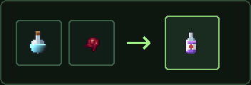

Referans · 0.2.1
Bloklar ve tarifler
Modun tarif dosyalarından malzemeler hazırlamak.
Biyo çalışma masası

- 3 × Cam
- 5 × Demir Külçesi
- 1 × Çalışma Masası
Taşıyıcı sıvı

- 1 × İksir
- 1 × Şeker
- 1 × Balçık Topu
Katalizör

- 1 × Nether Yumrusu
- 1 × Nether Kuvarsı
Santrifüj

- 5 × Demir Külçesi
- 2 × Cam
- 1 × Redstone Tozu
- 1 × Ocak
Altın şırınga

- 1 × Şırınga
- 3 × Altın Külçesi
- 1 × Redstone Tozu
Mutajen bazı

- 1 × Taşıyıcı sıvı
- 1 × Tecrübe İksiri
Netherit şırınga

- 1 × Altın şırınga
- 2 × Netherit Hurdası
Geri dönüş serumu

- 1 × Taşıyıcı sıvı
- 1 × Mayalı Örümcek Gözü
Dizileyici

- 4 × Demir Külçesi
- 2 × Cam
- 1 × Redstone Karşılaştırıcı
- 1 × Dürbün
Dengeleyici

- 1 × Taşıyıcı sıvı
- 1 × Işık Taşı Tozu
Sentezleyici

- 4 × Demir Külçesi
- 3 × Cam
- 1 × İksir Tezgâhı
- 1 × Redstone Tozu
Şırınga

- 1 × Cam Şişe
- 1 × Demir Külçesi
- 1 × Demir Parçası